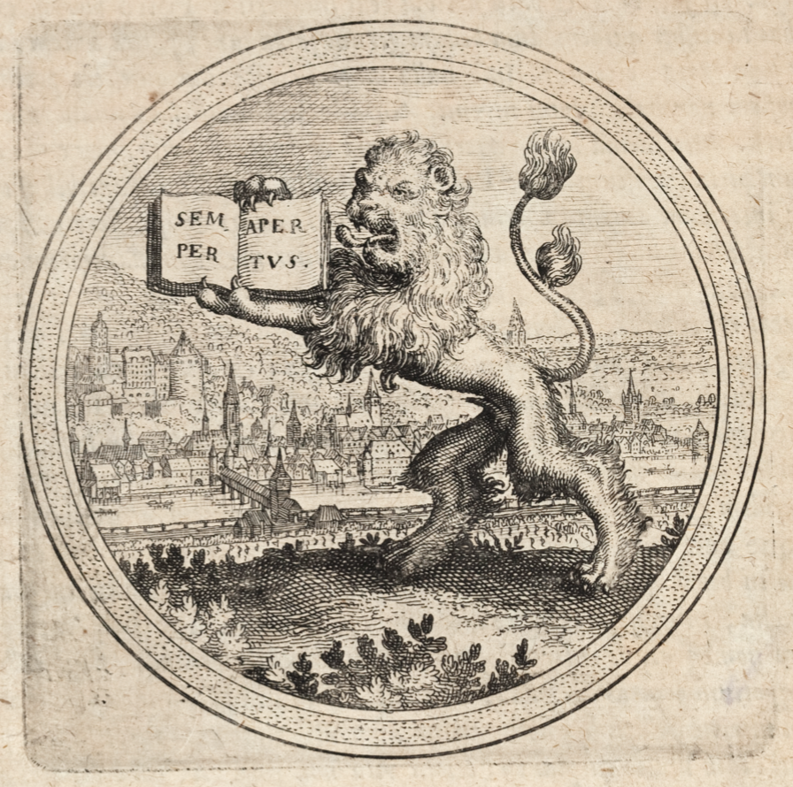
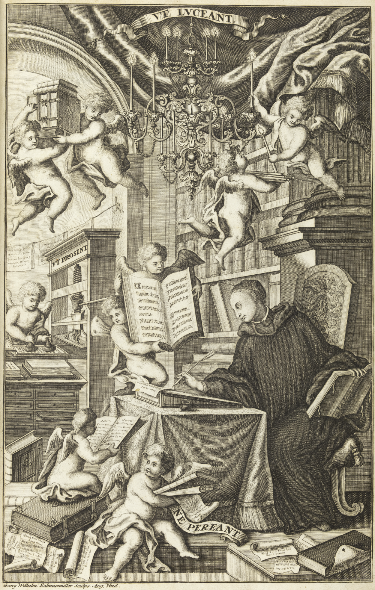

Einleitung
›heiEDITIONS‹ ist eine Infrastruktur für digitale Editionen an der Universitätsbibliothek Heidelberg. Sie umfasst ein konzeptuelles Rahmenwerk, Regeln für Datenformate, Hilfsmittel für die Erstellung und Redaktion von Editionsdaten (›Authoring‹), Verarbeitungsprogramme, eine Hosting- und Visualisierungsplattform sowie Anleitungen und Dokumentation. Die Infrastruktur eignet sich für ein breites Spektrum editorischer Gegenstände und ermöglicht Editionen unterschiedlicher Erschließungstiefe. Sie erwächst aus sehr heterogenen Kooperationsprojekten mit nationalen und internationalen Partnern und befindet sich in stetiger Weiterentwicklung. Open Access Im Einklang mit der Open Access Policy der Universität Heidelberg 1) und treu dem traditionellen Leitwort Semper apertus (›Stets offen‹) der Universität2) werden editorische Inhalte, Regelwerke und die technischen Instrumente von ›heiEDITIONS‹ im Open Access bzw. als Open Source zugänglich gemacht.
Abb. 1: Der pfälzische Löwe mit geöffnetem Buch, in dem das Leitwort der Universität Heidelberg Semper apertus (›Stets offen‹) erscheint, auf diesem Kupferstich erstmalig belegt (, Emblem 67).
Erbe der ›Bibliotheca Palatina‹ Die Universitätsbibliothek Heidelberg sieht sich als älteste Universitätsbibliothek Deutschlands und als Nachfolgeinstitution der berühmten ›Bibliotheca Palatina‹3) in der Verantwortung, nicht nur als sorgsame Bewahrerin, sondern auch als vorausschauende Mitgestalterin an der Erhaltung, Pflege, Zugänglichmachung und Verbreitung verschriftlichten kulturellen Erbes mitzuwirken. ›heiEDITIONS‹ verfolgt dabei unter Würdigung bisheriger editorischer Methoden und Konventionen auch das Ziel, das Potenzial digitaler Technologien für Editionen zukunftsorientiert fruchtbar zu machen. Als eine institutionelle Infrastruktur bedient ›heiEDITIONS‹ primär Editionsvorhaben von Kooperationspartnern des Hauses und der eigenen Universität, wobei der Erschließung der eigenen historischen Bestände eine besondere Rolle zukommt. Durch ihre Einbindung u. a. in nationale Fachinformationste (FID) wird ›heiEDITIONS‹ jedoch weit über Heidelberg hinaus eingesetzt. Außerdem steht ›heiEDITIONS‹ mit seinen frei zugänglichen Regelwerken und Technologien auch anderen an digitalen Editionen interessierten Institutionen und Personen als Inspirationsquelle oder zur direkten Nachnutzung offen.
Abb. 2: Personifizierte Darstellung des ›Weltgeistes‹ am Giebel des Ostflügels der Universitätsbibliothek Heidelberg, Symbol der Weltoffenheit der Universität, der auch ›heiEDITIONS‹ verpflichtet ist. Foto Joachim Feist (https://heidicon.ub.uni-heidelberg.de/detail/110058).
›(Wieder-)Geburt der Edition‹ aus dem Geist der Digitalisierung Rückblickend steht die Entstehung und Etablierung von ›heiEDITIONS‹ an der Universitätsbibliothek Heidelberg in einem engem Zusammenhang mit der Digitalisierung der textragenden Artefakte. Nachdem in den frühen 2000er-Jahren ein eigenes Digitalisierungszentrum aufgebaut worden war und umfangreiche Erfahrungen mit der Digitalisierung und virtuellen Zusammenführung der heute großteils in Rom befindlichen ›Bibliotheca Palatina‹ gewonnen worden waren, übernahm die Universitätsbibliothek in den Jahren 2010–2014 die Aufgabe, die Bibliothek des ehemaligen Klosters Lorsch digital zu rekonstruieren. Die rund 330 noch erhaltenen Handschriften der einst hochbedeutenden Bibliothek sind weltweit zerstreut auf 68 Bibliotheksstandorte. Als Digitalisate, begleitet von zahlreichen erschließenden Informationen, sind sie nun unter ↪ https://www.bibliotheca-laureshamensis-digital.de unter einer gemeinsamen Oberfläche frei zugänglich.4) Die in diesem Projekt gesammelten Erfahrungen im Umgang mit der Rekonstruktion dislozierter Bestände und nicht zuletzt das dabei erlangte Renommé bei zahlreichen Projektpartnern schufen günstige Voraussetzungen für die ersten digitalen Editionsvorhaben, in denen sich das Haus als Kooperationspartner engagierte: In den Editionsprojekten Welscher Gast digital und Kaiserchronik digital galt es nun, über das in den früheren Digitalisierungsprojekten aufgebaute Heidelberger Workflowsystem DWork die Digitalisate zu Überlieferungsträgern eines literarischen Werkes gesammelt zu präsentieren und als neue Komponente TEI-kodierte Transkriptionsdaten in enger Verbindung mit dem Digitalisat zu präsentieren.
Dieses Vorgehen, das auch die meisten folgenden Editionsprojekte prägt, stellt immer das texttragende Artefakt in den Vordergrund. Die Präsentation der Edition wird primär durch die Seiten der Überlieferungsträger strukturiert. Die digitalen Bilder werden zunehmend flankiert durch zusätzliche Erschließungsinstrumente wie Wasserzeichenaufnahmen, Spezial- und Detailaufnahmen, einen dynamischen Maßstab und eine Visualisierung der Lagen.5) Die Präsentation der Editionen wird gesteuert durch die physischen Strukturen der Textquellen. Wir sind überzeugt, dass Editionsprojekte gut daran tun, in einem ersten Schritt ihre materiellen Grundlagen zu sichern und daran mitzuwirken, auf diese Weise und mithilfe digitaler Aufnahmen das schriftliche Kulturerbe vorsorglich zu konservieren. Selbst in der Gegenwart sind Zustandsverschlechterungen oder gar Verluste historischer Texträger nicht auszuschließen. Editionsprojekte, die ihre Textbasis durch idealerweise vollständige und nachhaltig archivierte digitale Aufnahmen und Texttranskriptionen ›festschreiben‹, arbeiten nicht nur für sich, sondern leisten eine Grundlagenarbeit für künftige Generationen. Aber auch für das eigene editorische Vorhaben und dessen Rezeption wirken sie segensreich, denn mittels der transparenten Veröffentlichung ihrer Quellenbasis legen sie ihr Material für jedermann frei und befördern eine offene sachkritische Diskussion ihrer wissenschaftlichen Entscheidungen.
TEI Die bisherige Entwicklung und auch die Zukunft von ›heiEDITIONS‹ wären nicht möglich ohne den reichen Erfahrungsschatz, die konzeptuellen Empfehlungen und die technischen Werkzeuge der ›Text Encoding Initiative‹ (TEI) und der dazugehörenden engagierten Community. 6) Nicht nur wäre es unökonomisch, das Rad im hochkomplexen Terrain der Texterschließung für sich selbst immer wieder neu zu erfinden. Es wäre auch nicht nachhaltig und wissenschaftlich klug, denn der Nutzen digitaler Editionen (gerade gegenüber nur gedruckten Textausgaben) entfaltet sich voll erst in der Nachnutzung durch vielfältig ausgerichtete Forschungszugriffe auf den Quellcode, und zwar bei weitem nicht nur durch das Editionsprojekt oder seine Trägerinstitution selbst, sondern auch von außen durch Dritte.
Viele Forschungsfragen erfordern andere Zugänge zu Texten einer Edition als diejenigen, die von den Herausgebern über eine Präsentationsoberfläche bereitgestellt werden. Der Verfügbarmachung des Quellcodes kommt daher eine eminente Bedeutung zu. Dafür muss aber der Quellcode zwar nicht zwingend direkt nachnutzbar sein (direkte Interoperabilität ist bei der Heterogenität der TEI-Community und ihrer Datenmodellierungsansätze, aber auch der textuellen Gegenstände illusorisch), er sollte aber für wissenschaftliche Beschäftigung verständlich und seine Strukturen transparent dokumentiert sein. Selbst wenn sich die TEI nicht als verbindlicher Standard, sondern als ein flexibles Rahmenwerk an Empfehlungen versteht, deren Anpassung und Erweiterung für spezifische Bedarfe von vornherein vorgesehen und in der technischen TEI-Infrastruktur selbst angelegt ist, halten wir Standardbildung für eine wesentliche Aufgabe gerade größerer, institutioneller TEI-Anwender.
Die Universitätsbibliothek Heidelberg ist Mitglied der TEI und versteht ihre Mitgliedschaft nicht nur als Zeichen des Dankes für die Unterstützung der Community und als Beitrag zur Erhaltung und Pflege der TEI-Werkzeuge, sondern als Bekenntnis zur aktiven Mitwirkung an der Weiterentwicklung der TEI. Dabei beschreitet sie durch eigene Erweiterungen auch experimentelle Wege, jedoch stets bemüht um die Konformität mit den Grundprinzipien der TEI.7)
Layout Ein Erweiterungsbereich, der unsere bisherige Fokussierung auf eine eng mit digitalen Bildern verknüpfte seitenbasierte Texterfassung reflektiert und den wir auch künftig für unentbehrlich halten, ist eine auf dem Faksimile-Modul der TEI8) basierende Technik für eine grobe strukturelle Wiedergabe des Seitenlayouts, die ggf. auch ohne Rückgriff auf koordinatengenaue Annotation der digitalen Bilder auskommt. Mit diesem Ansatz, der von vornherein auch mit Blick auf eine unkomplizierte Visualisierung konzipiert wurde, ist es möglich, auf klare Weise nicht-lineare Textverteilungen zu beschreiben und gleichzeitig dem Herausgeber volle Freiheit für die semantisch sinnvolle Gestaltung der zu lesenden Textabfolge zu gewähren. Auf Letzterem basiert die sog. ›Leseansicht‹, die eine Alternative zur seitenbasierten ›Quellenansicht‹ bietet und sich der in der TEI zumindest historisch primären inhaltlich ausgerichteten Kodierungsperspektive annähert.9)
Ontologische Erweiterungen Zum Kern von ›heiEDITIONS‹ gehört die Ontologie ›heiEDITIONS Concepts‹. In enger Verbindung zu unserem XML-Regelwerk ›heiEDITIONS Schema‹ verwaltet sie das in unseren Editionen verwendete begriffliche Vokabular in Form einer in übergeordneten konzeptuellen Modellen verankerten und nach dem Paradigma von Linked Open Data mit relevanten Normdateien vernetzten RDFS/OWL-Ontologie. Sie bildet eine Brücke zwischen den durch XML vorgegebenen Ausdrucksmöglichkeiten der TEI und dem Semantic Web. An vielen Stellen schlägt sie sich in der Gestaltung unseres TEI-Codes direkt nieder, indem wir etwa statt des sonst üblichen Attributs @type für klassifikatorische Angaben konsequent ein Attribut einsetzen, das auf URIs von ›heiEDITIONS Concepts‹ verweist. Auf diese Weise wollen wir nicht nur eine einheitliche in-house Kodierung produzieren, die über Projektgrenzen hinweg standardisiert verarbeitet und visualisiert werden kann, sondern darüber hinaus Daten erzeugen, deren Vokabular transparent definiert und in größere konzeptionelle und technische Rahmenstrukturen eingebettet ist.
Digitale Editionen sind für uns keine Modeerscheinung, sondern wir streben es an, auf diesem Kerngebiet wissenschaftlichen Publizierens im Schulterschluss mit anderen Publikationsdiensten des Hauses professionelles Know-how aufzubauen, um hochkarätige wissenschaftliche Editionsvorhaben begleiten und verwirklichen zu können. Dennoch bleibt ›heiEDITIONS‹ noch ein Wagnis und ein Schritt ins Ungewisse, denn vor dem Hintergrund ehrwürdiger jahrhundertealter Traditionen der Editorik müssen digitale Editionsmethoden und Präsentationsformen noch ihre Tauglichkeit und ihre Qualitäten unter Beweis stellen. Dazu gehört neben ernsthafter Absicht durchaus auch die Bereitschaft zum Experiment. Wir sind aber überzeugt, dass gelegentliche Rückschläge zur Natur jeder neuen Sache gehören, und sehen in der Kooperationsbereitschaft unserer wissenschaftlichen Partner die ermunternde Bestätigung, dass wir uns auf dem richtigen Weg befinden.
Standardbildung Neben dem Bestreben, pionierartig Neues zu entwickeln, wollen wir mit unseren Ansätzen gleichzeitig ein Vorbild sein, zur Nachahmung unserer Herangehensweise anregen und eine fördernde Wirkung zugunsten der Etablierung von Standards entfalten. Dabei ist uns bewusst, dass Standards auf dem bisher recht anarchischen Gebiet digitalen Edierens nur dann nachgenutzt oder überhaupt erst als Standards wahrgenommen werden, wenn sie kraft ihrer Güte, ihrer Leistungsfähigkeit und ihrer Eignung zur Modellierung textueller Realitäten überzeugen. Deshalb bemühen wir uns, stets selbst die strengsten Kritiker unserer Entwicklungen zu sein, und setzen auf breiten Austausch mit den relevanten Communities.
Abb. 3: Prometheus mit Adler und Jungfrau mit Kind am Haupteingang der Universitätsbibliothek Heidelberg. Als Sinnbilder für Forschung und Lehre repräsentieren sie auch für ›heiEDITIONS‹ unseren Mut zum Experiment, aber auch unser Bestreben um nachahmenswerte Standardbildung. Foto Joachim Feist (https://heidicon.ub.uni-heidelberg.de/detail/656148), Ausschnitt.
Forschung und Lehre Innovatives Denken findet für ›heiEDITIONS‹ nicht nur an der Spitze der Forschung statt, sondern gleichermaßen auch bei den jüngsten Universitätsmitgliedern, den Studenten. Sie sind als digital natives in gewisser Weise besonders geeignet, die aktuelle Entwicklung mitzugestalten. Ihre Mitarbeit ist für viele Projekte unverzichtbar, es liegen aber auch erste Erfahrungen über selbständige studentische Editionsprojekte vor, die als Seminararbeiten vorgelegt wurden.10) Wir wünschen uns für die Zukunft einerseits eine verstärkte Präsenz digitaler Editionstechnologien in der Lehre, um dem wissenschaftlichen Nachwuchs einschlägige Kompetenzen zu vermitteln, andererseits legen wir aber auch Wert darauf, dass unsere Editionen künftig als Textgrundlagen für den akademischen Unterricht in Frage kommen. Dafür wird sich vor allem die Entwicklung geeigneter Publikations- und Präsentationsformen, besonders auch von druckbaren Produkten, als essenziell erweisen. Für die Akzeptanz unserer Editionen in der Forschung ist wiederum eine feinkörnige und verlässliche Zitierbarkeit wichtig, die wir über die Integration standardisierter Zitierschnittstellen anstreben.
Leitlinien Ein ideelles Vorbild für die Leitlinien von ›heiEDITIONS‹ finden wir auf dem Frontispiz des 1721 erschienenen Thesaurus anecdotorum des Melker Benediktiners Bernhard Pez (), der durch seine intensiven Kontakte zu den französischen Maurinern mit den prägenden Geistern der barocken historischen Editionsmethodik in gegenseitig befruchtendem Austausch stand11) und zusammen mit seinem Bruder Hieronymus als ein Pionier und Vorreiter der Quellenkritik und der historisch arbeitenden Edition im deutschsprachigen Raum gelten kann. Der Kupferstich des Frontispiz bringt drei Maximen der Editorik zum Ausdruck: NE PEREANT, VT PROSINT sowie VT LVCEANT.
Abb. 4: Frontispiz mit der Darstellung von drei Leitlinien der Editorik, aus .
Die Devise ›Auf dass sie nicht untergehen‹ (ne pereant) spricht die Bedeutung des Sammelns, des schützenden Bewahrens, des Be- und Festschreibens, der ordnenden Transkription und der publikatorischen Wiedergabe unter konservatorischem Gesichtspunkt an. Dieser Aspekt des Schutzes und der Bewahrung des kulturellen Erbes kommt in unserem Haus in der Pflege unserer eigenen historischen Sammlungen, aber in digitaler Form auch im Aufbau digitalisierter Zusammenführungen dislozierter Bestände und Werküberlieferungen sowie im Anfertigen, in der Aufbereitung und Publikation transkribierter Volltexte der Textzeugen zur Geltung.
Aus dem Postulat ›Auf dass sie nützlich sind‹ (ut prosint) leiten wir die Verpflichtung ab, die Forschung und Lehre mit einer solchen Zugänglichmachung und Aufbereitung der Editionen und ihrer Daten zu bedienen, die sie zur Beantwortung ihrer Fragen und zur Verwirklichung ihrer Aufgaben befähigt, ihr dabei behilflich ist und sie dabei fördert. Die Herausforderung besteht in der Entwicklung von transparenten Ablagen, von gut dokumentierten Zugängen und Schnittstellen sowie in der Bereitstellung von feinkörnigen und persistenten Referenzpunkten.
Als Forderung nach Sichtbarkeit, Klarheit und Prägnanz der Präsentation machen wir uns den Leitspruch ›Auf dass sie leuchten‹ (ut luceant) zu eigen. Was nicht gefunden wird, wird nicht genutzt; was bei der Benutzung verwirrt, wird schnell verlassen; was die Nutzung nicht auf artikulierte Weise steuert und befördert, hebt das Potenzial der edierten Materie nicht aus. Für die Auffindbarkeit unserer Editionen sorgen wir durch Optimierung für Suchmaschinen und Erfassung in bibliothekarischen Katalogen und Findsystemen, für optimierte Nutzung entwickeln wir intuitive und verständliche Interfaces.